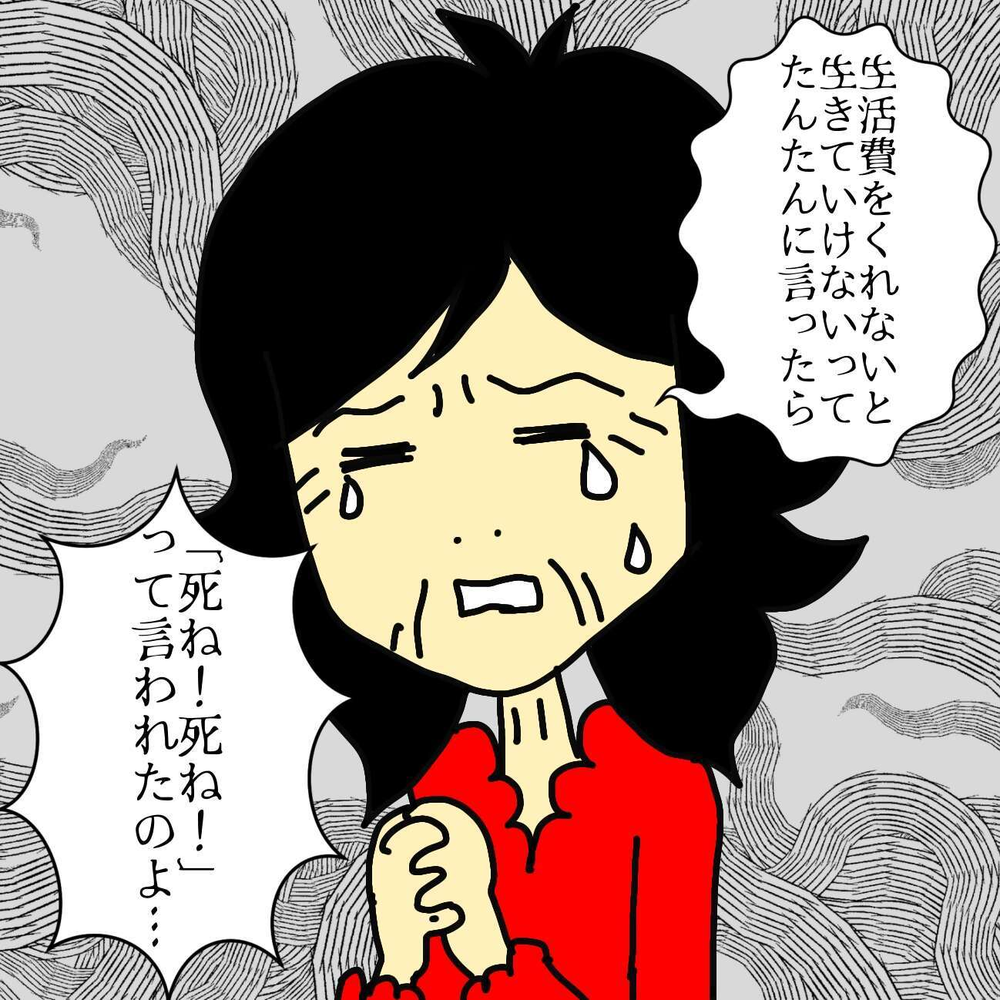
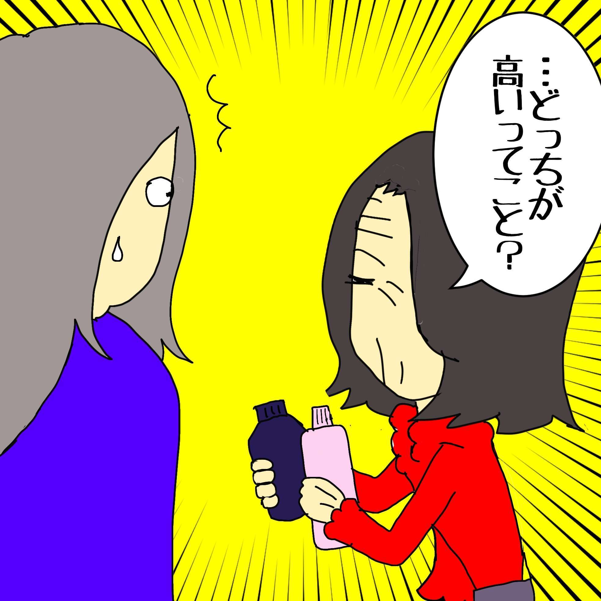
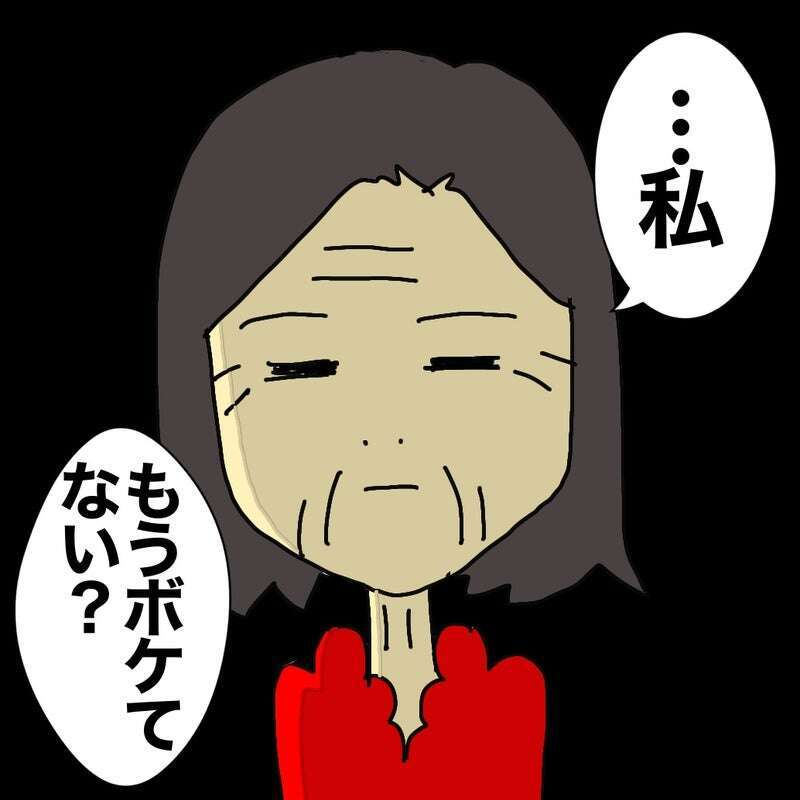
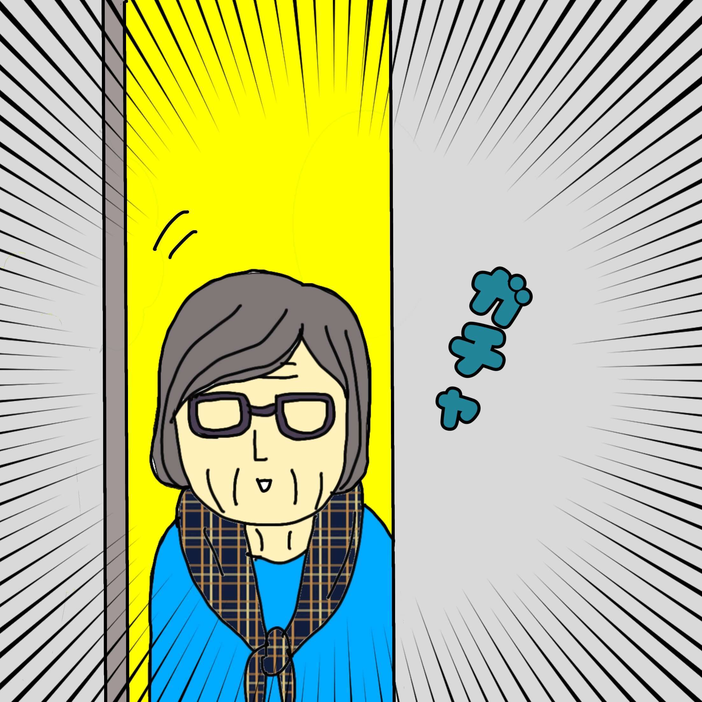
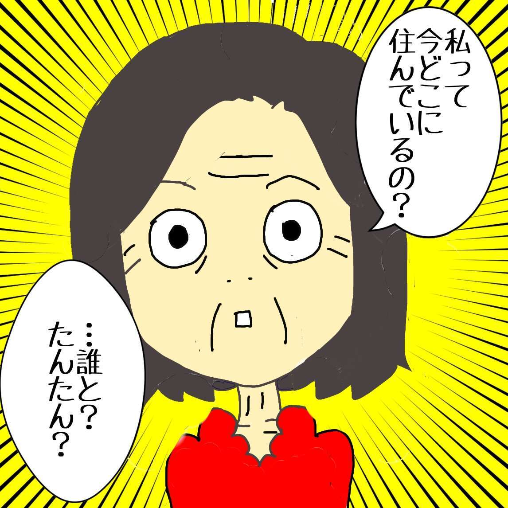
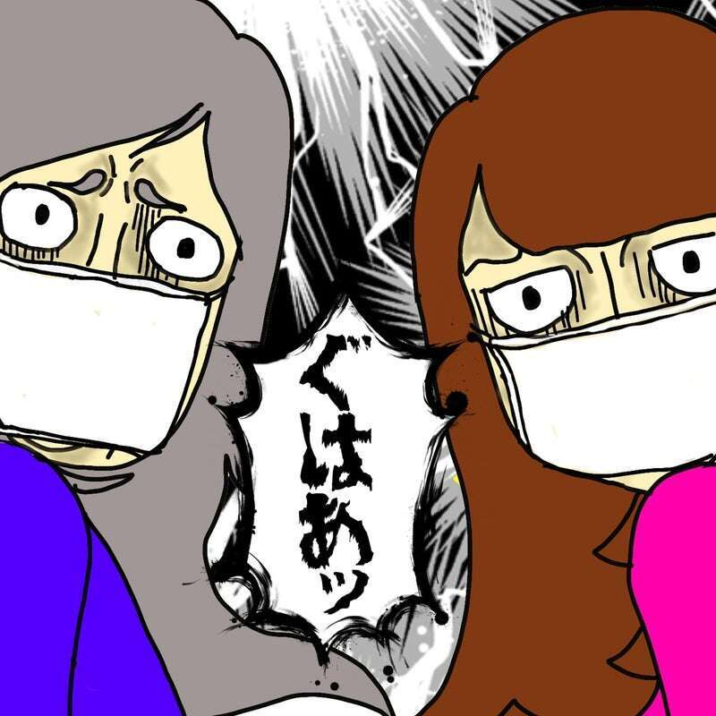
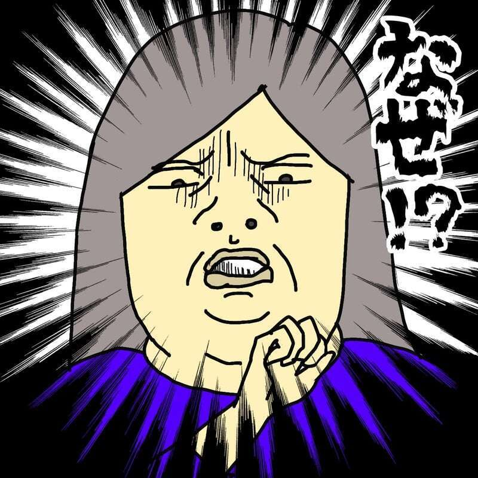
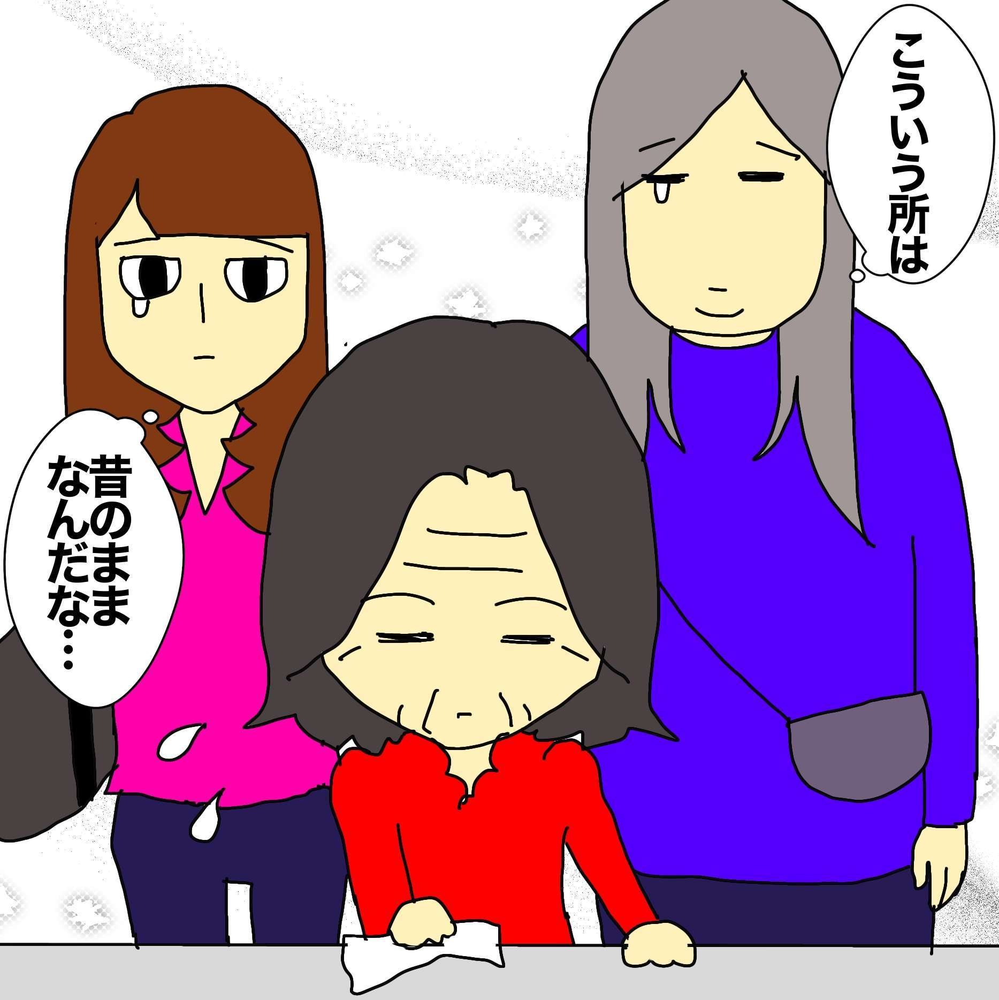

含有关键字“wafuufu”的文章
1-
 每个人的经历 发布日期：
每个人的经历 发布日期：什么时候应该停止服用没有任何效果的痴呆症药物？我很担心，因为我是个好老师......
-
 每个人的经历 发布日期：
每个人的经历 发布日期：我患有痴呆症的妈妈包里有内衣！？她不记得把它放在那里了……
-

每个人的经历 发布日期：不好的记忆不会消失，但我却忘记了我想记住的事情……我的母亲患有痴呆症……
-

每个人的经历 发布日期：我母亲因痴呆症失去了数字概念。不过，“某个时间”的倒计时是准确的……
-

每个人的经历 发布日期：你四楼的房间正在检查吗？我的母亲患有痴呆症，她开始感到焦虑……/哇胡……
-

每个人的经历 发布日期：我在疗养院结识的我母亲的好朋友。但我有一点麻烦.../哇...
-

每个人的经历 发布日期：“我们从哪里来，又要回到哪里？”因新冠病毒而突然变得虚弱的痴呆症患者……
-

每个人的经历 发布日期：妈妈的房间里传来浓重的臭味……养老院发生聚集性疫情！洗澡取消了……
-

每个人的经历 发布日期：我的母亲在疗养院感染了冠状病毒。我担心我的妈妈在整个隔离期间都穿着同样的衣服......
-

每个人的经历 发布日期：妈妈的痴呆症加重了，跟以前判若两人……但我突然恍然大悟……